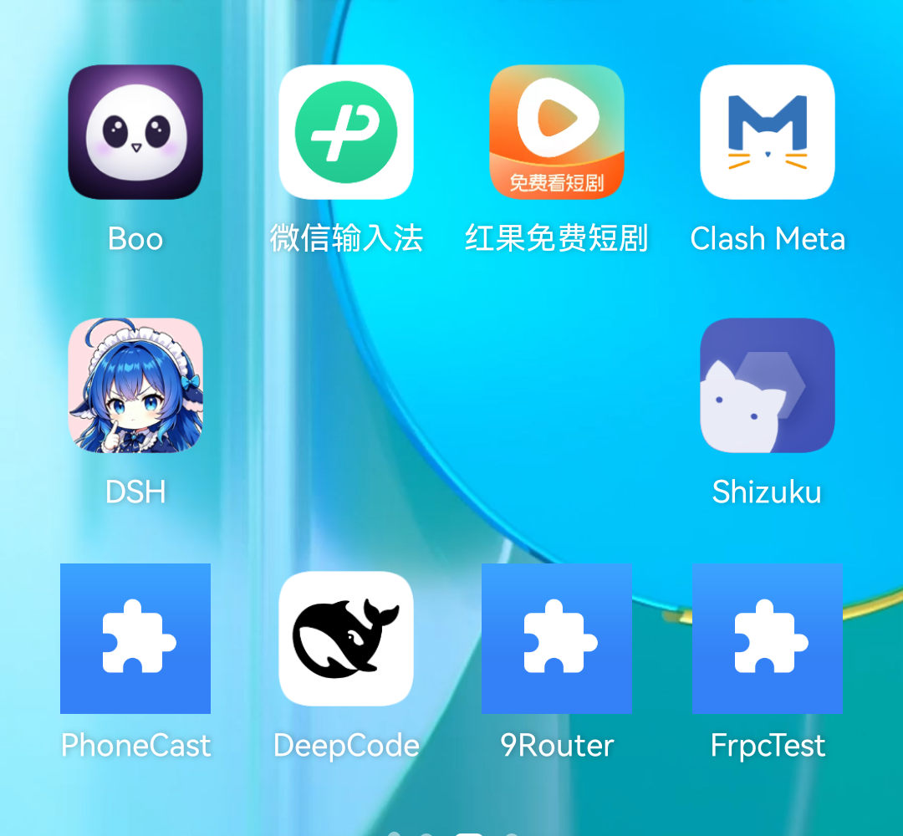
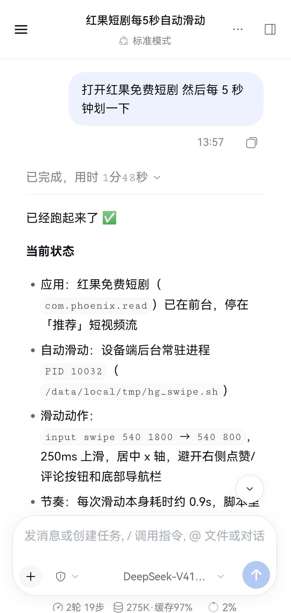
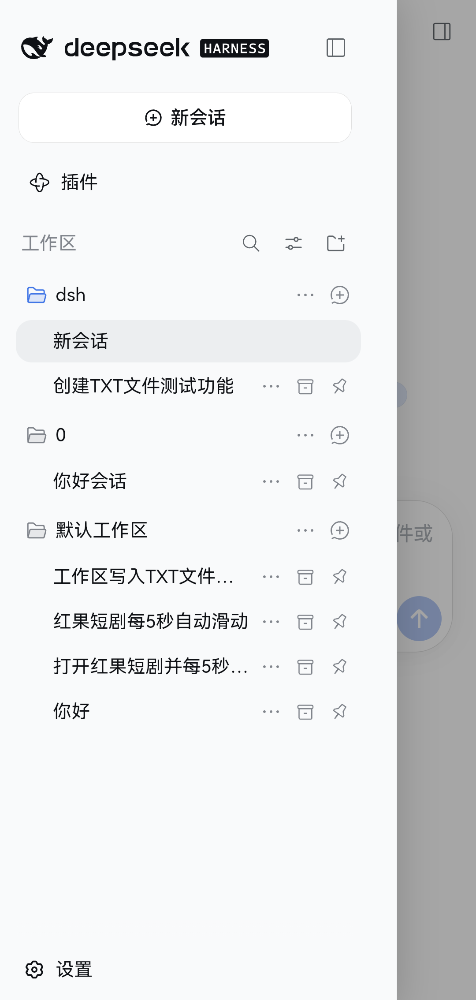
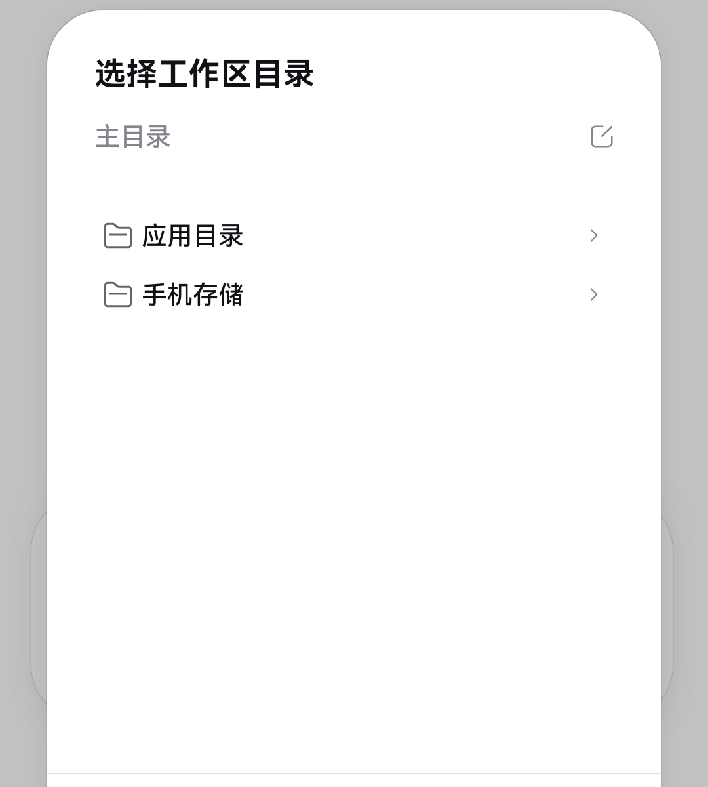
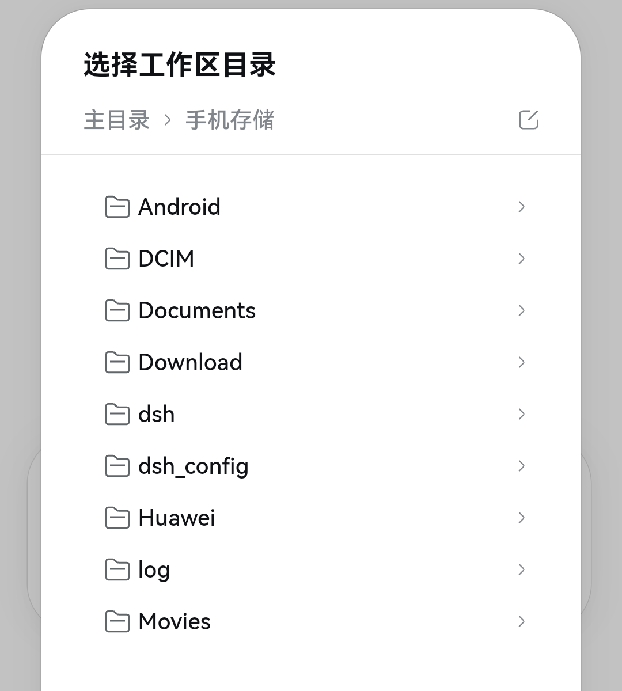
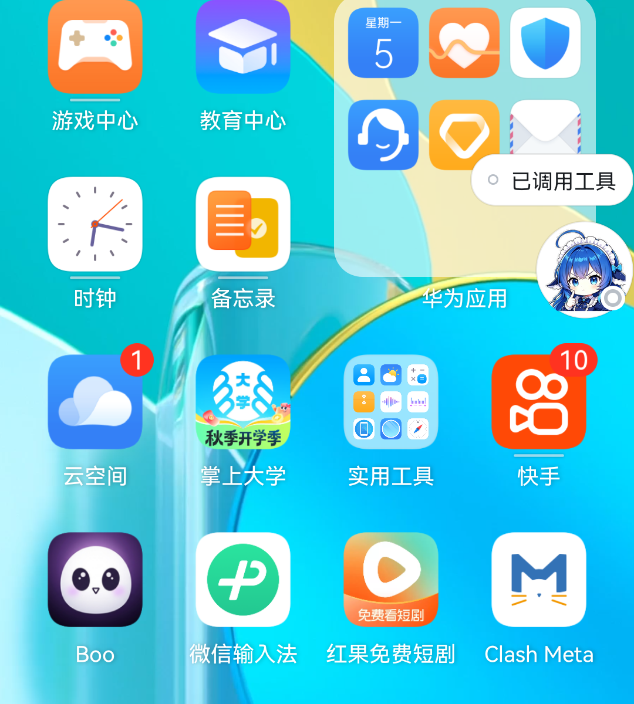
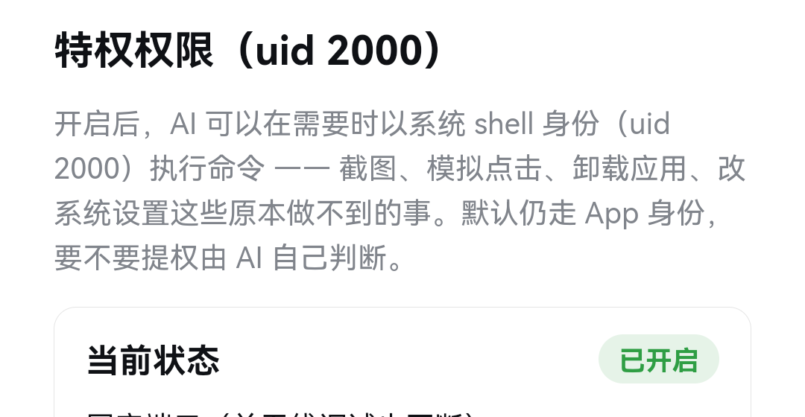
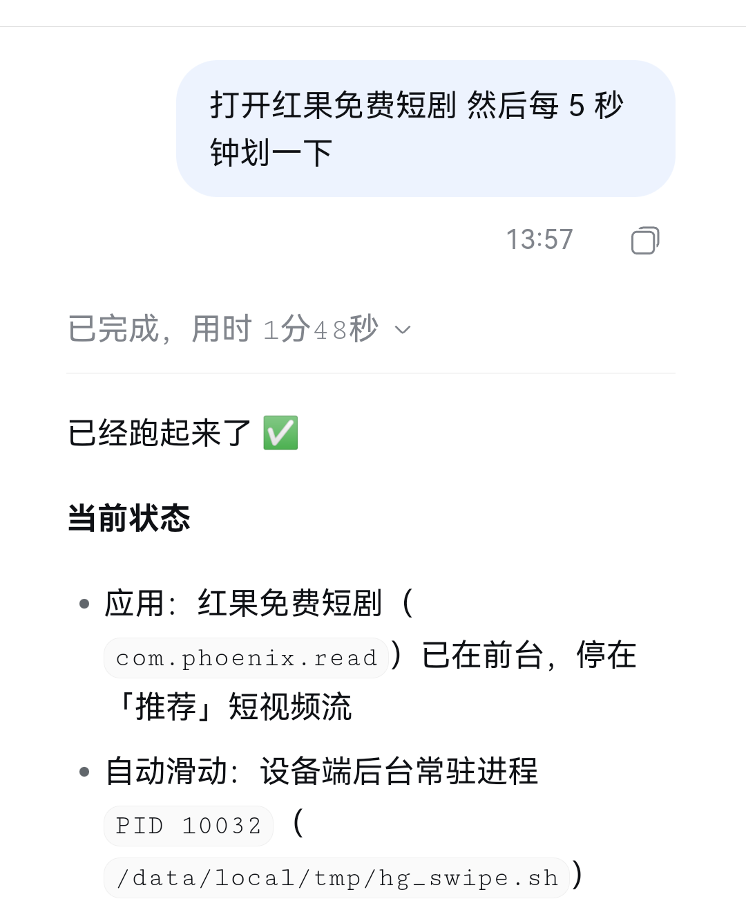

不是套壳，也不连电脑。
整个 Agent 运行时就在这台设备上。

官方 Web 前端由 WebView 直接加载，界面一行都没有重写。


手机存储 选外部存储里的任意目录
应用目录 选应用私有目录，可新建



失败方式很隐蔽：退出码是 0，屏幕上却什么都没发生。
bash 永远是应用身份，与权限预设无关
shell 走 uid 2000，要不要提权由 AI 自己判断

Node 在安卓上的平台标识是 android，
而官方插件只认 linux、darwin、win32。
上游靠 EEXIST 判定「已被发布」，
转译层把这个语义原样保住，引擎源码一行没动。
缺一个，对应的整片功能就废掉 —— 搜索、图片附件、终端面板，一个都跑不起来。
打开另一个应用、每五秒滑动一次、再截图确认状态。
